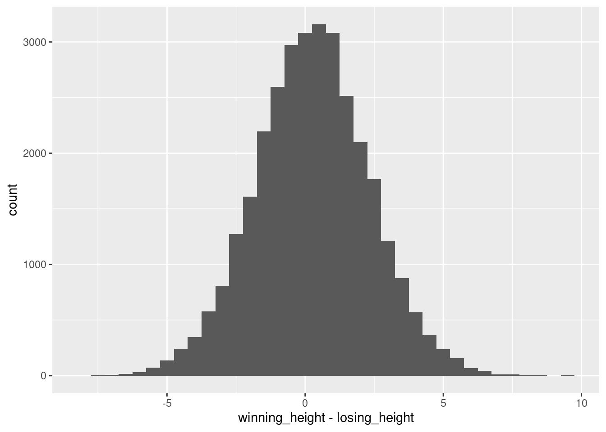
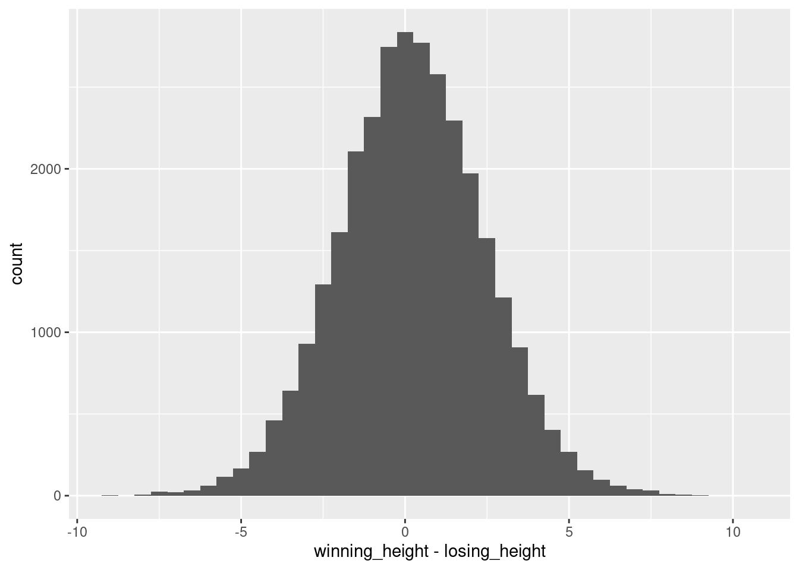

This exercise revisits most topics presented in the workshop (but will also go beyond it slightly in some cases to provide additional input).
If you are a R beginner and followed the workshop, you can do this last exercise in the end to test your knowledge. It will be a bit harder than the other workshop exercises to challenge you one last time and encourage you to think about concepts you might want to revisit, so don’t worry if some exercises feel a bit harder, we haven’t talked about everything yet.
If you already have some R experience, you can do this exercise before the rest of the workshop and use it to identify weak points to follow up on.
Use all resources at your disposal (cheat sheets, stack overflow …), that’s how you would work on a real project as well.
So, in order to provide you with a totally fresh data set, let’s look at beach volleyball. The data was collected from international beach volleyball championships, and displays a lot of stats on each single match.
Goal
For this exercise we want to focus on a simple questions: Do height differences in volleyball matter so much that taller teams have a winning advantage? If that would be the case, the mean height of the winning team should be significantly larger than the mean height of the losing team. Let’s take a look!
Tip
Throughout this script I will use a mixture of tidyverse and Base R code. Fell free to use the syntax you are comfortable with.
Exercise 1
1) Loading Data
Download the data sets vb_w and vb_l and load the data into R. vb_w contains the stats of the winning team, vb_l the stats of the losing team.
Hints
Admittedly not the easiest data loading exercise. One file is a .csv file, the other an SPSS file (.sav). Take a look here to see how to load them into R.
You need to install haven to load the .sav file.
You need to look at the sep argument in read.csv(): It needs to specify how the values in the .csv file are separated. Use a text editor to take a look into the file itself to find out what the separator should be. We have seen a similar example in Loading Data: Exercise 2.
Solution
# install.packages("haven") # Commented out, only execute if the package needs to be installed.library(haven)library(tidyverse) ## Will use later on
── Attaching core tidyverse packages ──────────────────────── tidyverse 2.0.0 ──
✔ dplyr 1.1.4 ✔ readr 2.1.5
✔ forcats 1.0.0 ✔ stringr 1.5.1
✔ ggplot2 3.5.1 ✔ tibble 3.2.1
✔ lubridate 1.9.3 ✔ tidyr 1.3.1
✔ purrr 1.0.2
── Conflicts ────────────────────────────────────────── tidyverse_conflicts() ──
✖ dplyr::filter() masks stats::filter()
✖ dplyr::lag() masks stats::lag()
ℹ Use the conflicted package (<http://conflicted.r-lib.org/>) to force all conflicts to become errors
vb_w <-read.csv(file = here::here("raw_data", "vb_w.csv"), sep =" ")vb_l <-read_sav(file = here::here("raw_data", "vb_l.sav"))## Take a look:str(vb_w)
'data.frame': 76756 obs. of 40 variables:
$ circuit : chr "AVP" "AVP" "AVP" "AVP" ...
$ tournament : chr "Huntington Beach" "Huntington Beach" "Huntington Beach" "Huntington Beach" ...
$ country : chr "United States" "United States" "United States" "United States" ...
$ year : int 2002 2002 2002 2002 2002 2002 2002 2002 2002 2002 ...
$ date : chr "2002-05-24" "2002-05-24" "2002-05-24" "2002-05-24" ...
$ gender : chr "M" "M" "M" "M" ...
$ match_num : int 1 2 3 4 5 6 7 8 9 10 ...
$ w_player1 : chr "Kevin Wong" "Brad Torsone" "Eduardo Bacil" "Brent Doble" ...
$ w_p1_birthdate : chr "1972-09-12" "1975-01-14" "1971-03-11" "1970-01-03" ...
$ w_p1_age : num 29.7 27.4 31.2 32.4 32.1 ...
$ w_p1_hgt : int 79 78 74 78 75 75 78 77 75 79 ...
$ w_p1_country : chr "United States" "United States" "Brazil" "United States" ...
$ w_player2 : chr "Stein Metzger" "Casey Jennings" "Fred Souza" "Karch Kiraly" ...
$ w_p2_birthdate : chr "1972-11-17" "1975-07-10" "1972-05-13" "1960-11-03" ...
$ w_p2_age : num 29.5 26.9 30 41.6 29.8 ...
$ w_p2_hgt : int 75 75 79 74 80 77 78 79 75 76 ...
$ w_p2_country : chr "United States" "United States" "Brazil" "United States" ...
$ w_rank : chr "1" "16" "24" "8" ...
$ l_rank : chr "32" "17" "9" "25" ...
$ score : chr "21-18, 21-12" "21-16, 17-21, 15-10" "21-18, 21-18" "21-16, 21-15" ...
$ duration : chr "00:33:00" "00:57:00" "00:46:00" "00:44:00" ...
$ bracket : chr "Winner's Bracket" "Winner's Bracket" "Winner's Bracket" "Winner's Bracket" ...
$ round : chr "Round 1" "Round 1" "Round 1" "Round 1" ...
$ w_p1_tot_attacks : int NA NA NA NA NA NA NA NA NA NA ...
$ w_p1_tot_kills : int NA NA NA NA NA NA NA NA NA NA ...
$ w_p1_tot_errors : int NA NA NA NA NA NA NA NA NA NA ...
$ w_p1_tot_hitpct : num NA NA NA NA NA NA NA NA NA NA ...
$ w_p1_tot_aces : int 1 0 0 0 1 0 0 0 1 2 ...
$ w_p1_tot_serve_errors: int NA NA NA NA NA NA NA NA NA NA ...
$ w_p1_tot_blocks : int 7 4 2 3 0 0 0 0 2 3 ...
$ w_p1_tot_digs : int NA NA NA NA NA NA NA NA NA NA ...
$ w_p2_tot_attacks : int NA NA NA NA NA NA NA NA NA NA ...
$ w_p2_tot_kills : int NA NA NA NA NA NA NA NA NA NA ...
$ w_p2_tot_errors : int NA NA NA NA NA NA NA NA NA NA ...
$ w_p2_tot_hitpct : num NA NA NA NA NA NA NA NA NA NA ...
$ w_p2_tot_aces : int 2 4 0 0 0 0 0 0 0 4 ...
$ w_p2_tot_serve_errors: int NA NA NA NA NA NA NA NA NA NA ...
$ w_p2_tot_blocks : int 0 0 4 0 6 0 0 3 3 1 ...
$ w_p2_tot_digs : int NA NA NA NA NA NA NA NA NA NA ...
$ id : int 1 2 3 4 5 6 7 8 9 10 ...
str(vb_l)
tibble [76,756 × 40] (S3: tbl_df/tbl/data.frame)
$ circuit : chr [1:76756] "AVP" "AVP" "AVP" "AVP" ...
..- attr(*, "format.spss")= chr "A4"
$ tournament : chr [1:76756] "Huntington Beach" "Huntington Beach" "Huntington Beach" "Huntington Beach" ...
..- attr(*, "format.spss")= chr "A22"
$ country : chr [1:76756] "United States" "United States" "United States" "United States" ...
..- attr(*, "format.spss")= chr "A22"
$ year : num [1:76756] 2002 2002 2002 2002 2002 ...
..- attr(*, "format.spss")= chr "F8.2"
$ date : Date[1:76756], format: "2002-05-24" "2002-05-24" ...
$ gender : chr [1:76756] "M" "M" "M" "M" ...
..- attr(*, "format.spss")= chr "A1"
$ match_num : num [1:76756] 1 2 3 4 5 6 7 8 9 10 ...
..- attr(*, "format.spss")= chr "F8.2"
$ w_rank : chr [1:76756] "1" "16" "24" "8" ...
..- attr(*, "format.spss")= chr "A7"
$ l_player1 : chr [1:76756] "Chuck Moore" "Mark Paaluhi" "Adam Jewell" "David Swatik" ...
..- attr(*, "format.spss")= chr "A29"
$ l_p1_birthdate : Date[1:76756], format: "1973-08-18" "1971-03-08" ...
$ l_p1_age : num [1:76756] 28.8 31.2 26.9 29.3 26.3 ...
..- attr(*, "format.spss")= chr "F8.2"
$ l_p1_hgt : num [1:76756] 76 75 77 76 73 NA 75 75 68 75 ...
..- attr(*, "format.spss")= chr "F8.2"
$ l_p1_country : chr [1:76756] "United States" "United States" "United States" "United States" ...
..- attr(*, "format.spss")= chr "A20"
$ l_player2 : chr [1:76756] "Ed Ratledge" "Nick Hannemann" "Collin Smith" "Mike Mattarocci" ...
..- attr(*, "format.spss")= chr "A30"
$ l_p2_birthdate : Date[1:76756], format: "1976-12-16" "1972-01-12" ...
$ l_p2_age : num [1:76756] 25.4 30.4 27 32.6 24.2 ...
..- attr(*, "format.spss")= chr "F8.2"
$ l_p2_hgt : num [1:76756] 80 78 76 80 75 76 81 77 77 74 ...
..- attr(*, "format.spss")= chr "F8.2"
$ l_p2_country : chr [1:76756] "United States" "United States" "United States" "United States" ...
..- attr(*, "format.spss")= chr "A20"
$ l_rank : chr [1:76756] "32" "17" "9" "25" ...
..- attr(*, "format.spss")= chr "A7"
$ score : chr [1:76756] "21-18, 21-12" "21-16, 17-21, 15-10" "21-18, 21-18" "21-16, 21-15" ...
..- attr(*, "format.spss")= chr "A25"
$ duration : 'hms' num [1:76756] 00:33:00 00:57:00 00:46:00 00:44:00 ...
..- attr(*, "units")= chr "secs"
..- attr(*, "format.spss")= chr "TIME8"
$ bracket : chr [1:76756] "Winner's Bracket" "Winner's Bracket" "Winner's Bracket" "Winner's Bracket" ...
..- attr(*, "format.spss")= chr "A21"
$ round : chr [1:76756] "Round 1" "Round 1" "Round 1" "Round 1" ...
..- attr(*, "format.spss")= chr "A8"
$ l_p1_tot_attacks : num [1:76756] NA NA NA NA NA NA NA NA NA NA ...
..- attr(*, "format.spss")= chr "F8.2"
$ l_p1_tot_kills : num [1:76756] NA NA NA NA NA NA NA NA NA NA ...
..- attr(*, "format.spss")= chr "F8.2"
$ l_p1_tot_errors : num [1:76756] NA NA NA NA NA NA NA NA NA NA ...
..- attr(*, "format.spss")= chr "F8.2"
$ l_p1_tot_hitpct : num [1:76756] NA NA NA NA NA NA NA NA NA NA ...
..- attr(*, "format.spss")= chr "F8.2"
$ l_p1_tot_aces : num [1:76756] 1 0 1 0 0 0 0 0 0 0 ...
..- attr(*, "format.spss")= chr "F8.2"
$ l_p1_tot_serve_errors: num [1:76756] NA NA NA NA NA NA NA NA NA NA ...
..- attr(*, "format.spss")= chr "F8.2"
$ l_p1_tot_blocks : num [1:76756] 0 2 1 2 0 0 0 0 0 1 ...
..- attr(*, "format.spss")= chr "F8.2"
$ l_p1_tot_digs : num [1:76756] NA NA NA NA NA NA NA NA NA NA ...
..- attr(*, "format.spss")= chr "F8.2"
$ l_p2_tot_attacks : num [1:76756] NA NA NA NA NA NA NA NA NA NA ...
..- attr(*, "format.spss")= chr "F8.2"
$ l_p2_tot_kills : num [1:76756] NA NA NA NA NA NA NA NA NA NA ...
..- attr(*, "format.spss")= chr "F8.2"
$ l_p2_tot_errors : num [1:76756] NA NA NA NA NA NA NA NA NA NA ...
..- attr(*, "format.spss")= chr "F8.2"
$ l_p2_tot_hitpct : num [1:76756] NA NA NA NA NA NA NA NA NA NA ...
..- attr(*, "format.spss")= chr "F8.2"
$ l_p2_tot_aces : num [1:76756] 0 0 0 2 0 0 0 3 0 0 ...
..- attr(*, "format.spss")= chr "F8.2"
$ l_p2_tot_serve_errors: num [1:76756] NA NA NA NA NA NA NA NA NA NA ...
..- attr(*, "format.spss")= chr "F8.2"
$ l_p2_tot_blocks : num [1:76756] 1 0 0 0 1 0 0 0 0 2 ...
..- attr(*, "format.spss")= chr "F8.2"
$ l_p2_tot_digs : num [1:76756] NA NA NA NA NA NA NA NA NA NA ...
..- attr(*, "format.spss")= chr "F8.2"
$ id : num [1:76756] 1 2 3 4 5 6 7 8 9 10 ...
..- attr(*, "format.spss")= chr "F8.0"
'data.frame': 76756 obs. of 78 variables:
$ id : num 1 10 100 1000 10000 ...
$ gender : chr "M" "M" "W" "W" ...
$ circuit.x : chr "AVP" "AVP" "AVP" "AVP" ...
$ tournament.x : chr "Huntington Beach" "Huntington Beach" "Huntington Beach" "Hermosa Beach" ...
$ country.x : chr "United States" "United States" "United States" "United States" ...
$ year.x : num 2002 2002 2002 2003 2007 ...
$ date.x : Date, format: "2002-05-24" "2002-05-24" ...
$ match_num.x : num 1 10 39 45 8 9 10 11 12 13 ...
$ w_rank.x : chr "1" "14" "12" "1" ...
$ l_player1 : chr "Chuck Moore" "David Fischer" "Danalee Bragado-Corso" "Elaine Youngs" ...
$ l_p1_birthdate : Date, format: "1973-08-18" "1972-04-09" ...
$ l_p1_age : num 28.8 30.1 30.9 33.3 31.9 ...
$ l_p1_hgt : num 76 75 72 72 77 75 80 75 78 73 ...
$ l_p1_country : chr "United States" "United States" "United States" "United States" ...
$ l_player2 : chr "Ed Ratledge" "Jerry Graham" "Rachel Scott" "Holly McPeak" ...
$ l_p2_birthdate : Date, format: "1976-12-16" "1971-04-02" ...
$ l_p2_age : num 25.4 31.1 26.9 34.1 37.2 ...
$ l_p2_hgt : num 80 74 68 67 76 78 77 80 72 79 ...
$ l_p2_country : chr "United States" "United States" "United States" "United States" ...
$ l_rank.x : chr "32" "19" "8" "3" ...
$ score.x : chr "21-18, 21-12" "21-17, 21-18" "21-15, 21-18" "21-15, 18-21, 16-14" ...
$ duration.x : 'hms' num 00:33:00 00:37:00 00:39:00 01:13:00 ...
..- attr(*, "units")= chr "secs"
$ bracket.x : chr "Winner's Bracket" "Winner's Bracket" "Contender's Bracket" "Finals" ...
$ round.x : chr "Round 1" "Round 1" "Round 4" "" ...
$ l_p1_tot_attacks : num NA NA NA 38 33 14 28 27 10 9 ...
$ l_p1_tot_kills : num NA NA NA 22 18 8 13 12 3 3 ...
$ l_p1_tot_errors : num NA NA NA NA 9 3 2 3 3 3 ...
$ l_p1_tot_hitpct : num NA NA NA 0.579 0.273 0.357 0.393 0.333 0 0 ...
$ l_p1_tot_aces : num 1 0 0 0 0 0 0 0 0 0 ...
$ l_p1_tot_serve_errors: num NA NA NA NA 0 2 3 4 0 5 ...
$ l_p1_tot_blocks : num 0 1 3 3 0 0 2 0 2 0 ...
$ l_p1_tot_digs : num NA NA NA 7 5 1 3 10 1 5 ...
$ l_p2_tot_attacks : num NA NA NA 31 13 18 15 31 32 35 ...
$ l_p2_tot_kills : num NA NA NA 13 7 6 9 15 14 18 ...
$ l_p2_tot_errors : num NA NA NA NA 1 8 2 4 9 7 ...
$ l_p2_tot_hitpct : num NA NA NA 0.419 0.462 -0.111 0.467 0.355 0.156 0.314 ...
$ l_p2_tot_aces : num 0 0 0 0 0 0 0 0 0 0 ...
$ l_p2_tot_serve_errors: num NA NA NA NA 1 1 2 1 0 2 ...
$ l_p2_tot_blocks : num 1 2 2 0 0 0 0 0 0 0 ...
$ l_p2_tot_digs : num NA NA NA 33 6 1 7 3 4 4 ...
$ circuit.y : chr "AVP" "AVP" "AVP" "AVP" ...
$ tournament.y : chr "Huntington Beach" "Huntington Beach" "Huntington Beach" "Hermosa Beach" ...
$ country.y : chr "United States" "United States" "United States" "United States" ...
$ year.y : int 2002 2002 2002 2003 2007 2007 2007 2007 2007 2007 ...
$ date.y : chr "2002-05-24" "2002-05-24" "2002-05-24" "2003-06-06" ...
$ match_num.y : int 1 10 39 45 8 9 10 11 12 13 ...
$ w_player1 : chr "Kevin Wong" "Mark Williams" "Annett Davis" "Kerri Walsh Jennings" ...
$ w_p1_birthdate : chr "1972-09-12" "1979-01-27" "1973-09-22" "1978-08-15" ...
$ w_p1_age : num 29.7 23.3 28.7 24.8 37.4 ...
$ w_p1_hgt : int 79 79 71 75 78 81 80 75 75 78 ...
$ w_p1_country : chr "United States" "Australia" "United States" "United States" ...
$ w_player2 : chr "Stein Metzger" "Sean Rosenthal" "Jenny Johnson Jordan" "Misty May-Treanor" ...
$ w_p2_birthdate : chr "1972-11-17" "1980-06-19" "1973-06-08" "1977-07-30" ...
$ w_p2_age : num 29.5 21.9 29 25.9 31.1 ...
$ w_p2_hgt : int 75 76 70 69 75 74 77 79 74 75 ...
$ w_p2_country : chr "United States" "United States" "United States" "United States" ...
$ w_rank.y : chr "1" "14" "12" "1" ...
$ l_rank.y : chr "32" "19" "8" "3" ...
$ score.y : chr "21-18, 21-12" "21-17, 21-18" "21-15, 21-18" "21-15, 18-21, 16-14" ...
$ duration.y : chr "00:33:00" "00:37:00" "00:39:00" "01:13:00" ...
$ bracket.y : chr "Winner's Bracket" "Winner's Bracket" "Contender's Bracket" "Finals" ...
$ round.y : chr "Round 1" "Round 1" "Round 4" NA ...
$ w_p1_tot_attacks : int NA NA NA 28 21 8 19 12 25 18 ...
$ w_p1_tot_kills : int NA NA NA 21 13 7 13 4 17 11 ...
$ w_p1_tot_errors : int NA NA NA NA 0 0 1 2 6 1 ...
$ w_p1_tot_hitpct : num NA NA NA 0.75 0.619 0.875 0.632 0.167 0.44 0.556 ...
$ w_p1_tot_aces : int 1 2 0 1 0 5 2 2 0 0 ...
$ w_p1_tot_serve_errors: int NA NA NA NA 1 3 1 0 1 2 ...
$ w_p1_tot_blocks : int 7 3 3 5 3 6 3 1 4 5 ...
$ w_p1_tot_digs : int NA NA NA 19 3 1 4 14 7 4 ...
$ w_p2_tot_attacks : int NA NA NA 45 20 20 23 40 14 20 ...
$ w_p2_tot_kills : int NA NA NA 19 14 14 14 21 10 13 ...
$ w_p2_tot_errors : int NA NA NA NA 2 2 3 7 0 1 ...
$ w_p2_tot_hitpct : num NA NA NA 0.422 0.6 0.6 0.478 0.35 0.714 0.6 ...
$ w_p2_tot_aces : int 2 4 0 0 2 2 2 0 3 1 ...
$ w_p2_tot_serve_errors: int NA NA NA NA 0 2 2 0 1 3 ...
$ w_p2_tot_blocks : int 0 1 1 0 0 0 0 2 0 0 ...
$ w_p2_tot_digs : int NA NA NA 27 8 6 9 2 4 9 ...
If we don’t put gender into the by argument, it will get duplicated with the suffix .x and .y. This happens because both data frames have a column with this name. But if we merge by this column, the function knows they belong together.
3) Selecting Columns
Select only the columns from the data frames that are relevant to our ‘research question’.
Hint
The relevant columns are: c("gender", "l_p1_hgt", "l_p2_hgt", "w_p1_hgt", "w_p2_hgt").
Calculate the mean height by team. Add the results in two new columns to the vb data frame, one for the losing team mean height, and one for the winning team mean height.
Hint
You will need to calculate the mean of the two columns for each row. There is a function called rowMeans() which can do exactly that. Provide a data frame consisting only of the relevant columns as input for the function. Or you can just add the respective columns and divide by two.
Now, let’s do a paired t-test comparing the mean winners height against the mean losers height.
1) Histogram
One assumption of the paired t-test is that the differences of the pairs are normally distributed. Check this assumption visually by creating a histogram of the winning_height - losing_height difference. Use a for-loop to create one histogram for the men and one for the women. You need to explicitly print() the plot if you want to display it from within a for-loop.
Tip
The start of your for loop should look like this: for(i in c("M", "W")){. Inside, filter for men/women, and then create the plot using this subsetted data frame.
Use geom_histogram() as geom for your plot.
Solution
for (i inc("M", "W")) {## Extract men/women, depending on i vb_gender <- vb %>%filter(gender == i) p <-ggplot(## Build the coordinate systemdata = vb_gender,mapping =aes(x = winning_height - losing_height) ) +## Use geom_histogram to build a histogram. Set the binwidth manually, so the bars get a bit smaller:geom_histogram(binwidth =0.5)## Explicitly print the plot, so it gets put out from the for loopprint(p)}


Hmm, so the differences in the mean team height are really small in most cases! One inch are 2.54 cm, and most height differences between the teams are not larger than 5 cm, so we probably won’t see an effect. But let’s proceed to confirm that!
2) Paired t-test
Do a paired t-test comparing the winning teams height vs the losing teams height. Again use a for-loop to test for men and women separately. Save the result in a list, and name the list elements.
Hint
Use the function t.test() and set the argument paired = "true".
To save the result in an empty list you have created, use: result_list[[i]] <- calculation.
Solution
## Define an empty list to save your t-test results in.result_list <-list()## Iterate over men and women:for (i inc("M", "W")) {## Extract men/women, depending on i vb_gender <- vb %>%filter(gender == i)## Do the t-test and save the result result_list[[i]] <-t.test(vb_gender$winning_height, vb_gender$losing_height,paired ="true" )}result_list
$M
Paired t-test
data: vb_gender$winning_height and vb_gender$losing_height
t = 23.111, df = 32168, p-value < 2.2e-16
alternative hypothesis: true mean difference is not equal to 0
95 percent confidence interval:
0.2439251 0.2891347
sample estimates:
mean difference
0.2665299
$W
Paired t-test
data: vb_gender$winning_height and vb_gender$losing_height
t = 16.38, df = 30646, p-value < 2.2e-16
alternative hypothesis: true mean difference is not equal to 0
95 percent confidence interval:
0.1839846 0.2340009
sample estimates:
mean difference
0.2089927
Th p-value is < 0.001 in both subgroups. However, we have a very large sample, so almost all group differences will become significant.
Note
Actually, this example would be a perfect application for lapply():
result_list <-lapply(c("M", "W"), function(x) {## Extract men/women vb_gender <- vb %>%filter(gender == x)## Calculate the t-test. Note how we don't need an empty list to save the results in, lapply() does that for us. t_test_result <-t.test(vb_gender$winning_height, vb_gender$losing_height, paired ="true")## Explictly return the result:return(t_test_result)})## We still hav to name our resulting list to know what is what:names(result_list) <-c("M", "W")
The output of lapply() is always a list, so we don’t have to define an empty list in the beginning of the loop.
3) Functions
Look at the mean differences. Not very big, right? Let’s calculate a standardized effect size, Cohen’s d! We can do that for a paired t test by dividing the mean of the differences of both groups by the standard deviation of the difference of both groups:
\(d=\frac{mean_{Diff}}{sd_{Diff}}\)
with Diff as the differences of the paired sample values.
Write a function to do that, then add it to your loop so Cohen’s d gets printed into your console. You can use the function lsr::cohensD() to check your function.
Solution
# install.packages("lsr") # Can be used for checking the own calculation## Function for calculating Cohen's dcohens_d <-function(group_1, group_2) {## Calculate the difference diff <- group_1 - group_2## Calculate d accoring to our formula d <-mean(diff) /sd(diff)return(d)}for (i inc("M", "W")) {## filter men/women vb_gender <- vb %>%filter(gender == i)## Paired t-test result_list[[i]] <-t.test(vb_gender$winning_height, vb_gender$losing_height, paired ="true")## Our Cohen's d function d <-cohens_d(group_1 = vb_gender$winning_height,group_2 = vb_gender$losing_height )## Cohen's d according to the lsr package: d_2 <- lsr::cohensD(x = vb_gender$winning_height,y = vb_gender$losing_height,method ="paired" )## Print dprint(paste("My Cohen's d:", round(d, 3)))print(paste("lsr Cohen's d:", round(d_2, 3)))}
[1] "My Cohen's d: 0.129"
[1] "lsr Cohen's d: 0.129"
[1] "My Cohen's d: 0.094"
[1] "lsr Cohen's d: 0.094"
So, following Cohen’s conventions, this are negligible effect sizes, so the height differences in professional volleyball are probably not that important for the outcome of the match. Not that surprising all together, because the height differences were very small in the first place, and there are probably much more important factors to winning a volleyball match than a minimal height advantage.
Exercise 3
1) Reshaping
Reshape the vb data frame (with both men and women in it) into long format, so all heights can be found in one column, with the winning/losing information in another column.
# A tibble: 6 × 7
gender l_p1_hgt l_p2_hgt w_p1_hgt w_p2_hgt result mean_height
<chr> <dbl> <dbl> <int> <int> <chr> <dbl>
1 M 76 80 79 75 winning_height 77
2 M 76 80 79 75 losing_height 78
3 M 75 74 79 76 winning_height 77.5
4 M 75 74 79 76 losing_height 74.5
5 W 72 68 71 70 winning_height 70.5
6 W 72 68 71 70 losing_height 70
2) Plotting
Use ggplot to build a violin plot showing the winners and losers height distribution by gender. Violin plots are similar to box plots but have the advantage of conveying more distributional information. If you want, you can also add a small box plot on top of the violin plot to have the advantage of both (you can get some inspiration on how to do that). Give meaningful axis labels and a plot title.
Hint
We want four violin plots/box plots in the end. Two for the winning teams (men, women), and two for the losing teams (men/women). The easiest way to achieve this is to build a new column containing the winning information and the gender in one pasted string. This new column can then be used as the x axis. This is not necessarily required, but makes it easier to lay the boxplot on top of the violin plot.
Solution
## Build a new column that can be used as x axis.vb_long <- vb_long %>%mutate(group =paste0(.$result, .$gender))## Build the coordinate systemggplot(vb_long,mapping =aes(x = group,y = mean_height,fill = gender )) +## Violin plot:geom_violin() +## Boxplot with some additional specifications:geom_boxplot(width =0.1,color ="grey",alpha =0.2 ) +## New colour palette:scale_fill_brewer(palette ="Dark2") +## New theme:theme_bw() +## Labels:ggtitle("Height differences between winning and losing teams in professional volleyball") +ylab("Height in inch") +xlab("Group")
The End
Impressive, you’ve finished the final exercise! If you really did it in the end of the workshop, that’s it, you should be pretty proficient in working with R now. Take a look at some of the Resources I have assembled if you want to to build on the foundation you just laid. If you have done this exercise in the beginning to test your knowledge, you can decide what to do next: Did you new everything already? Then also take a look at the Resources. Or do you want to follow up on some topics (if you haven’t already). Then you can use the links in this chapter to navigate there.